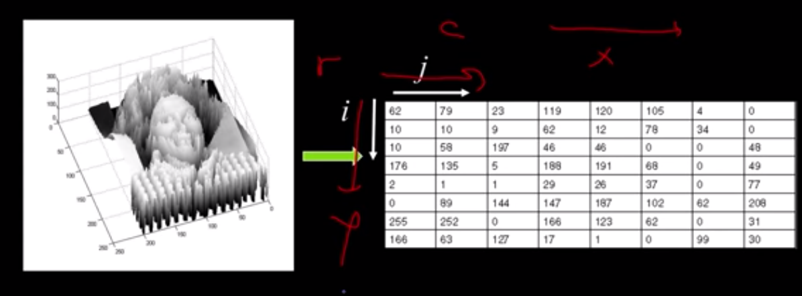
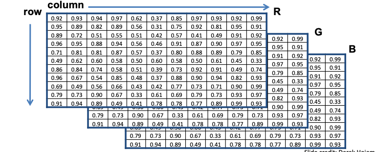
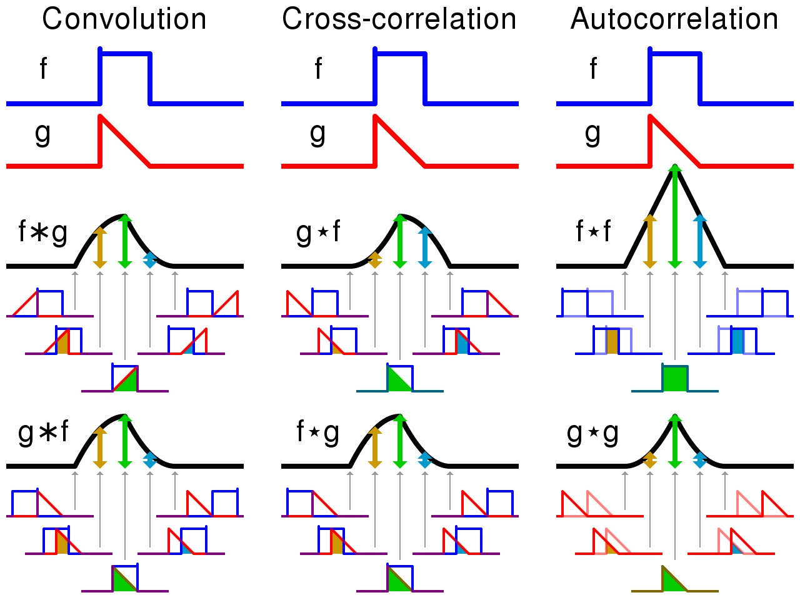
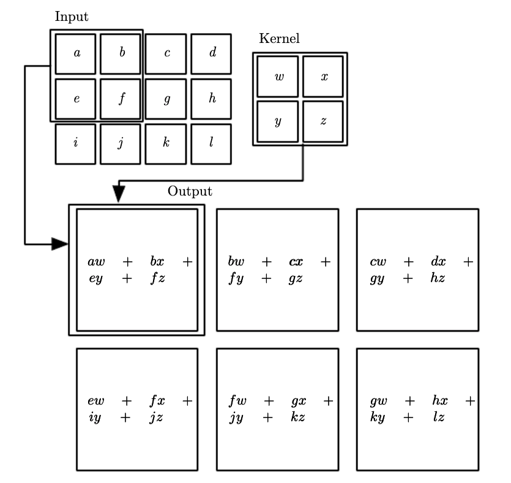
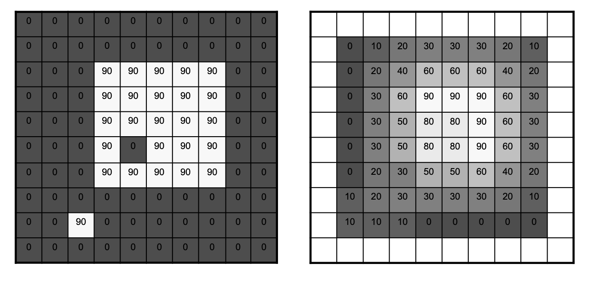
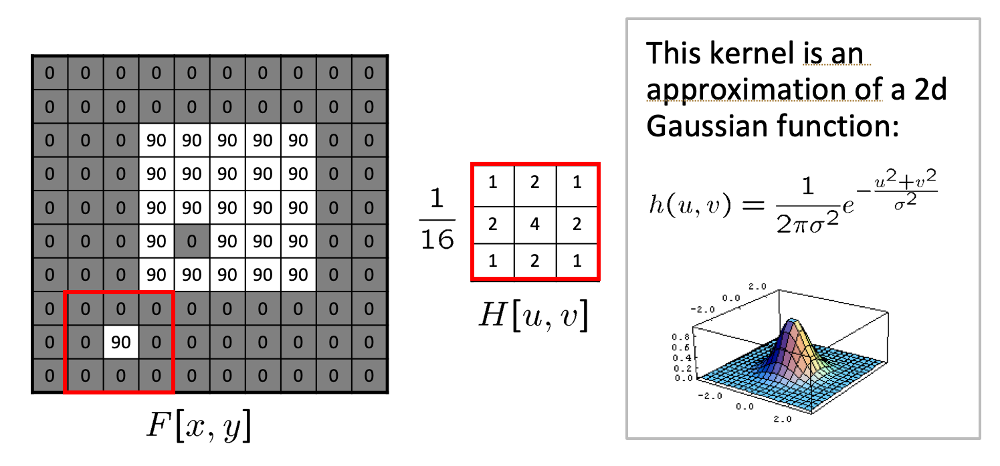
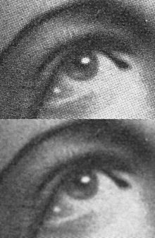
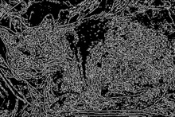

Introduction to Convolutional Neural Networks#
As elaborated here, humans build up a more schematic version of the environment across eye fixations than was previously thought. This schematic version of the environment is typically known as scene gist. It contains conceptual information about the scene’s basic category – is it natural, human-made, a cityscape? – and general layout, maybe limited to a few objects and/or features. This schematic version of the environment is a far cry from the “picture in the head” scenario. But it’s this schematic information that guides us from one eye fixation to the next, during which more detailed information can be sampled. In the picture above, the brain will first detect the cityscape schematic and then process one of the scene fixations - e.g. the yellow cab.
As we will see shortly images-based datasets are almost exclusively used for instructive purposes in CNNs. The reason is simple. With images we are able to “see” the effects of a number of important algorithms that are related to classification, object detection etc.
Focusing at the “fixation” stage of human vision, CNNs are biologically inspired from the structure that the neuroscientists David Hubel and Torsten Wiesel saw in the so called V1 region of the brain - the region at the back of our head that is responsible for the processing of visual sensory input signals coming from the eye’s retina.
Color images as functions#
A grayscale picture can be seen as a function \(f(x,y)\) of light intensities, where x and y are the rows and columns of pixels in the image.

Usually we have border constraints in the range of the input pixels e.g. \(x \in [a,b], y \in [c,d]\) but also in the output intensity values (typically 8-bit encoding is assumed that limits the values to [0, 255]).
The city scape color image above can also be seen as a vector function:
with its elements capturing the channels Red, Green and Blue functions, the mixture (superposition) of which can generate the pixel color of the original image.

Please note the convention to refer to the columns \(j\) of the matrix that represents each function with \(x\) and to the rows \(i\) with \(y\). This may cause some confusion at first.
The Convolution & Cross-Correlation Operation#
The key operation performed in CNN layers is that of 2D convolution. In fact in practice they are 4D convolutions as we try to learn many filters and we also consider many input images (mini-batch) in the iteration of our SGD optimizer.
We cover first the 1-dimensional case.
1D Convolution#
By definition the convolution between two functions in one dimension is given by:
 1D-convolution example. The operation effectively slides the flipped version of \(b\) across \(a\)
1D-convolution example. The operation effectively slides the flipped version of \(b\) across \(a\)
The result can be calculated as follows:
\(c[0] = \sum_m a[m]b[-m] = 0 * 0.25 + 0 * 0.5 + 1 * 1 + 0.5 * 0 + 1 * 0 + 1 * 0 = 1\)
\(c[1] = \sum_m a[m]b[1-m] = 0 * 0.25 + 1 * 0.5 + 0.5 * 1 + 1 * 0 + 1 * 0 = 1\)
\(c[2] = \sum_m a[m]b[2-m] = 1 * 0.25 + 0.5 * 0.5 + 1 * 1 + 1 * 0 + 1 * 0 = 1.5\)
\(c[3] = \sum_m a[m]b[3-m] = 1 * 0 + 0.5 * 0.25 + 1 * 0.5 + 1 * 1 = 1.625\)
and so on.
Convolution and cross-correlation are very close - see this 1D example (source to persuade yourself that this is the case.
 Convolution and cross-correlation are very similar quantities
2D Convolution#
In 2D the same principle applies. First, the convolution operation in some frameworks is the flipped version - this is perfectly fine as the convolution operation is commutative.
where \(x\) is the input of the convolution and \(h\) is the kernel or filter typically of smaller spatial dimensions.

Many ML frameworks don’t even implemented convolution but they do the very similar cross-correlation operation and they sometimes call it convolution to add to the confusion. Tensorflow implements the cross-correlation operation under the hood.
If you learn the flipped version of the kernel or not is irrelevant to the task of predicting the right label. Therefore you should not be concerned with the framework implementation details, the thing that is important for you to grasp is the essence of the operation. Lets look some effects that convolution has on input signals such as images.
Effects of 2D filtering operations#
Moving Average#
Lets go through the simplest possible 2D filtering operation as shown below. Note that these implement the convolution.
 Completed 2D MA Filtering
The MA filter causes “box” blurring of input images
2D Gaussian#
Using a Gaussian Blur filter before edge detection aims to reduce the level of noise in the image, which improves the result of the susually subsequent edge-detection algorithms. We will meet again this 2D Gaussian filter in the object detection section, where it is used to help in the initial segmentation in RCNN architectures.
 Gaussian Filter
 Blurring is evident in this picture
 Blurring is used to improve edge-detection
The above filtering operations are obviously deterministic. We are given the filter but in CNNs as we will see in the next section we are learning such filters. To keep the terminology aligned with the dense neural networks layers we will be denoting the filter with \(\mathbf w\) - the weights that need to be learned through the training process.